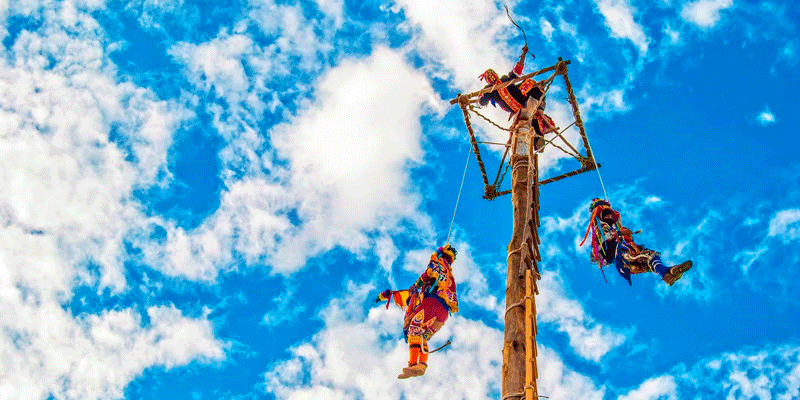
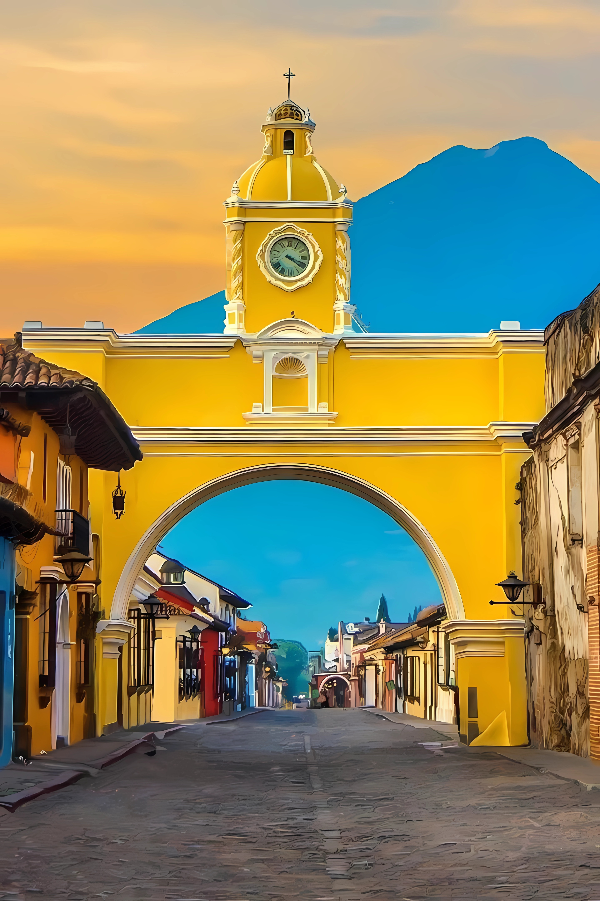

RUMBO TURISTICO GT
Conoce los mejores destinos de Guatemala y disfruta de nuestras ofertas exclusivas para ti.
Baja-Verapaz

Cubulco Baja Verapaz - Palo Volador
Disfruta de las bellezas naturales y la cultura local de Cubulco con su unico e inigualable palo volador
PETÉN

Petén- Cuna de la civilización maya
Cuna de la civilización maya. Su mayor relevancia radica en su inmensa riqueza arqueológica, albergando ciudades ancestrales inmersas en la selva tropical, y pieza clave en la conservación ambiental de Centroamérica.
ANTIGUA Y SOLOLÁ

ANTIGUA GUATEMALA-CIUDAD VIEJA
Explora el turistico arco de la ciudad y disfruta de sus coloridas calles
Contacto